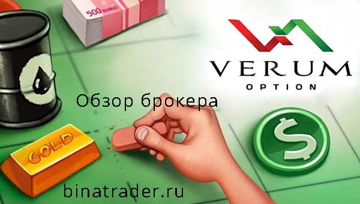

Обзор брокера бинарных опционов verum option
Описание брокера бинарных опционов
На сегодняшний день "Verum option" является одним из мировых лидеров рынка опционов. Брокер имеет сертификаты двух регулирующих организаций: ЦРОФР (Центр регулирования отношений на финансовых рынках) и ЦРФИН (Центр регулирования внебиржевых финансовых инструментов и технологий). Цель данных организаций – контролировать честность работы брокеров и обеспечивать трейдерам максимально удобные условия работы, и то, что "Verum Option" имеет сразу два сертификата, говорит о том, что компания действительно заботится о своих клиентах.
Что касается торговых возможностей брокера, то их количество и качество удовлетворит любого профессионала. Инновационный торговый терминал, более 200 рыночных активов, 7 типов опционов, сроки экспирации от 60 сек. до 1 года и многое другое – все это позволит вам воспользоваться всеми преимуществами опционного трейдинга. В связи с тем, что в политику "Verum Option" не входит разграничение клиентов по суммам пополнения депозита, предоставления бонусов и иных «плюшек», вид торгового счета также предоставляется для всех клиентов один. То есть, если вы зарегистрировались у брокера и пополнив счет на минимальную сумму, то получите тот же комплекс финансовых услуг, что и клиенты, пополнившие депо на $10 000 и более.
Торговая платформа
В качестве софта для трейдинга на финансовом рынке брокер "Verum option" предоставляет платформу "SpotOption 2.0", которой, может, сегодня никого и не удивишь, но с другой стороны это гарантия того, что в ходе торговли клиент компании не столкнется с техническими проблемами, которые свойственны новинкам рынка. "SpotOption" – это терминал, который апробирован большинством брокерских компаний рынка и миллионами трейдеров. А это значит, что у "Verum Option" вы будете торговать на одном из самых популярных и стабильных торговых терминалов в мире! Что касается функциональных и технических возможностей платформы, то стоит отметить большое количество торговых инструментов с различными сроками экспирации, удобный и понятный дизайн и максимально быстрый срок выполнения торговых приказов.
Среди набора сделок "Verum opcion" предлагает:
- Опционы Колл/Пут
- Одно Касание
- Турбо опционы 60 секунд
У брокера "Verum option" поддержка клиентов работает в формате 24/5. То есть – круглые сутки и 5 рабочих дней недели. С клиентами общаются хорошо подготовленные специалисты, способные ответить на любой каверзный вопрос трейдера по теме работы терминала и иных сервисов брокера.
Плюсы "verum option":
- Минимальный депозид ‑ 5 USD;
- Минимальная торговая позиция ‑ 1 USD;
- Круглосуточное русскоязычное обслуживание формата 24/5;
- Регуляция российским ЦРОФР;
- Торговая платформа "SpotOption" с максимально расширенным функционалом;
- Безопасность сайта – сертификат EV SSL;
- Отображение в терминале графиков котировок в виде японских свечей;
- 7 типов опционов;
- Ликвидность от Thompson Reuters;
- Наличие долгосрочных опционов (сроки экспирации - до 1 года);
- высокая прибыльность опционов – до 1550%
- наличие мобильной платформы.
-
Техническая сторона:
10/10 – Все на высшем уровне! -
Вывод денег:
10/10 вывели все деньги без каких либо вопросов и ограничений -
Время вывода:
9/10 выводили не всегда быстро,но в основном 2-5 дней -
Блокировка аккаунта
10/10 аккаунт не разу не заблокировали. -
Водят за нос:
10/10 Не возникло ни одного вопроса -
Поддержка:
10/10 Поддержка работала отлично, трубку брали и не уходили от разговоров. Всегда получали полные ответы на поставленные вопросы. -
Назойливость:
9/10 Иногда звонили и мне не хотелось с ними разговаривать, но в целом это даже плюс.